Les types de filtres
Filtres de type liste, code et numérique
Introduction
3 types de filtres sont disponibles dans les écrans PMSISoft :
- filtres de type liste
- filtres de type code
- filtres de type intervalle
A la première ouverture d’un écran, tous les filtres de l’écran sont inactifs.
Un filtre devient actif si l’utilisateur sélectionne au mois un item (pour les filtres de type liste) ou entre une saisie valide (filtres de type code et de type intervalle).
Un filtre redevient inactif si sa sélection est annulée.
Les filtres actifs sont pris en compte en cliquant sur le bouton “Filtrer” situé en haut à droite des écrans.
La prise en compte d’un filtre actif signifie que les données PMSI du tableau ou du graphique de l’écran sont filtrées en tenant compte du filtre actif.
Voir la documentation de chaque écran pour les explications détaillées sur la prise en compte des filtres dans l’analyse de l’écran.
Filtres de type liste
Définition
Les filtres de type liste permettent de sélectionner un ou plusieurs items au sein d’une liste finie d’items (mois, UM, types d’hospitalisation, GHM, CMD, GME, types d’intervenant CSARR, etc…)
Les listes sont définies à priori (liste des mois, liste des types d’hospitalisation, …) ou issues des données PMSI de l’établissement (liste des UM de l’établissement, liste des GHM représentés dans l’établissement, …).
Les listes de codes sont très généralement enrichies avec les libellés PMSI correspondant aux codes.
Exemples : libellés GHM pour les codes GHM, intitulés des types d’intervenants correspondant aux codes intervenants CSARR
Les listes sont multi-choix 1.
La sélection du ou des items peut toujours s’effectuer, item par item, en cliquant sur l’item : une coche s’affiche alors en face de chaque item sélectionné.
Pour désactiver une sélection, il suffit de décocher la ligne de l’item concerné.
Une sélection activée reste active tant que l’utilisateur ne la désactive pas, y compris si l’utilisateur sort de l’écran et y revient.
Quand la liste des items est importante, 2 aides à la sélection s’affichent en tête de la liste :
Sélect tous= sélection de tous les items de la listeRéinit= désélection de tous les items de la liste
Pour les filtres pour lesquels cela a du sens, (voir exemple illustré ci-dessous), il est aussi possible de réaliser une sélection d’items à partir de mots clés.
L’initulé du filtre est affiché par défaut à l’ouverture de l’écran.
Exemples
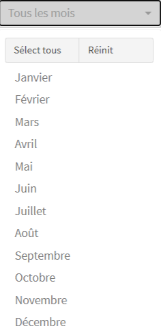
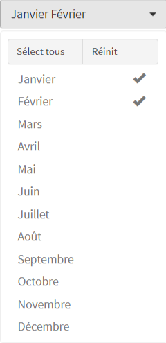
Un exemple classique : le filtre des mois
La 1ere image correspond au filtre qui vient juste d’être appelé : aucun mois n’est sélectionné
La 2eme image correspond au filtre après sélection manuelle des mois de janvier et février.
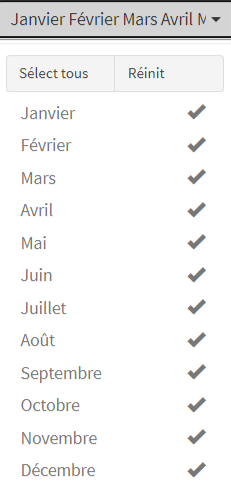
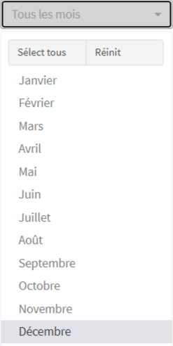
Filtre des mois (suite)
La 1ere image correspond au filtre après sélection de tous les mois après avoir cliqué sur Sélect tous
La 2eme image correspond au filtre entièrement désélectionné après avoir cliqué sur Réinit
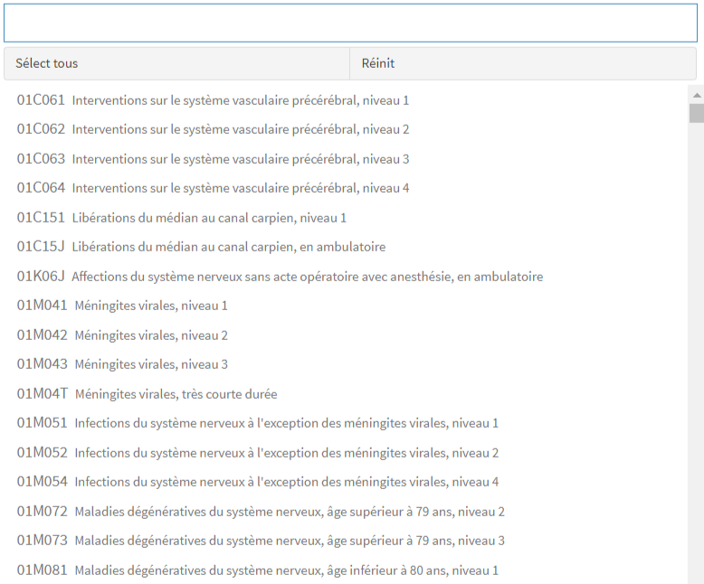
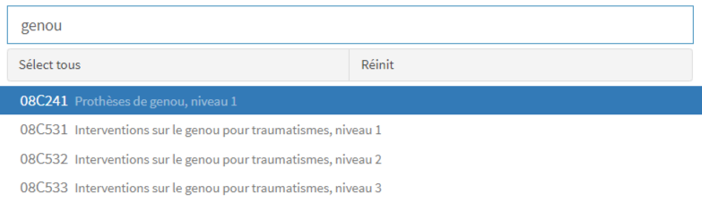
Filtre GHM
La 1ere image correspond au filtre qui vient juste d’être appelé
La 2eme image correspond au filtre après avoir saisi “genou” : seuls les GHM avec le mot “genou” dans leur intitulé sont affichés
Filtres de type code
Définition
Les filtres de type code permettent de rechercher la présence d’un code ou d’une liste de codes.
Exemples classiques : filtre “CIM-10” pour repérer la présence d’un codage CIM-10 dans des RUM ou des séjours (voir ci-dessous), filtre “NAS”
La recherche devient effective à partir de 2 positions saisies (voir illustration ci-dessous).
Un code saisi reste actif tant que l’utilisateur ne le supprime par dans le filtre, y compris si l’utilisateur sort de l’écran et y revient.
L’initulé du filtre est affiché par défaut à l’ouverture de l’écran.
Dans les requêteurs métier, des options plus sophistiquées existent pour ce type de filtre (exemple : exclusion du code saisi)
Exemples
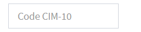
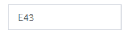
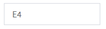
Filtre “CIM-10” permettant de repérer la présence d’un codage CIM-10
La 1ere image correspond au filtre qui vient juste d’être appelé.
La 2eme image correspond au filtre avec la saisie du code E43 “Malnutrition protéino-énergétique grave, sans précision” : sélection de toutes les lignes de la base de l’écran avec au moins 1 codage E43, indépendamment de sa position de codage.
La 3eme image correspondant au filtre avec la saisie d’un codage sur 2 positions : sélection de toutes les lignes de la base de l’écran avec au moins 1 codage CIM commençant par E4 (donc E40 ou E41 ou E42 ou E43 ou E44 ou E440 ou E441 ou E45 ou E46), indépendamment de sa position de codage.
Filtres de type intervalle
Définition
Les filtres de type intervalle permettent de sélectionner un intervalle entier de valeurs entières.
On distingue 4 intervalles possibles :
- un unique entier = sélection de la variable concernée avec exactement la valeur saisie 2
- un intervalle fermé avec une borne inférieure et une borne supérieure, séparée par une virgule = sélection de la variable concernée avec une valeur comprise entre la borne inférieure et la borne supérieure
- un intervalle semi-ouvert avec seulement une borne inférieure et le séparateur virgule = sélection de la variable concernée avec une valeur supérieure ou égale à la borne inférieure
- un intervalle semi-ouvert avec seulement le séparateur virgule et une borne supérieure = sélection de la variable concernée avec une valeur inférieure ou égale à la borne supérieure
Exemple classique : le nombre de RUM par séjour (voir exemple ci-dessous)
Un intervalle saisi reste actif tant que l’utilisateur ne le supprime par dans le filtre, y compris si l’utilisateur sort de l’écran et y revient.
L’initulé du filtre est affiché par défaut à l’ouverture de l’écran.
Exemples
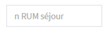
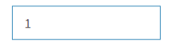
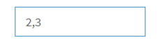
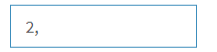
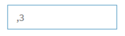
Filtre “Nombre de RUM par séjour” permettant de sélectionner les séjours en fonction de leur nombre de RUM
La 1ere image correspond au filtre qui vient juste d’être appelé.
La 2eme image correspond au filtre avec la valeur 1 : sélection des séjours avec 1 et uniquement 1 RUM.
La 3eme image correspond au filtre avec l’intervalle 2,3 : sélection des séjours avec un nombre de RUM compris entre 2 et 3.
La 4eme image correspond au filtre avec l’intervalle 2, : sélection des séjours avec au moins 2 RUM.
La 5eme image correspond au filtre avec l’intervalle ,3 : sélection des séjours avec au plus 3 RUM.